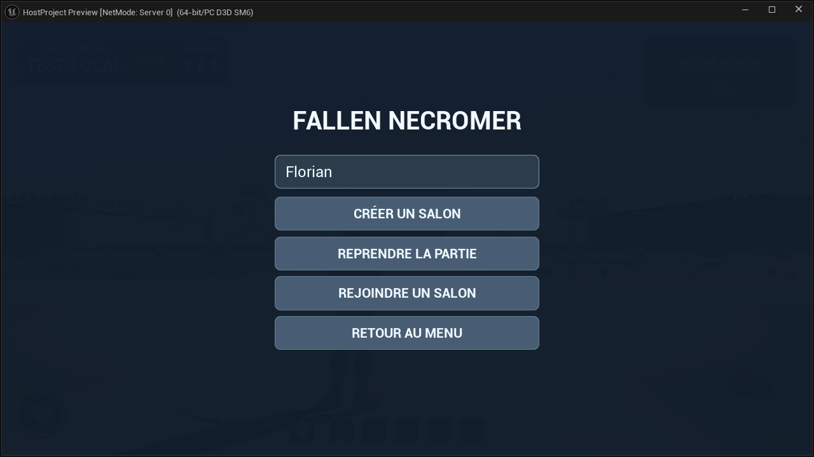

Multijoueur
Dans ce dossier
Dans cette page
État courant · V27
Version V27 · 23 octobre 2026. Les précisions ci-dessous constituent l’état courant ; les campagnes et versions précédentes restent consultables dans le volet historique.
En multijoueur, le serveur valide les transferts et suppressions de la collection personnelle. Les autres joueurs ne peuvent pas déplacer vos ombres. Les alliés en réserve ne restent pas simulés sur le terrain. Le menu ne met pas la partie réseau en pause. Les identifiants, niveaux, XP et KO sont conservés dans la sauvegarde et lors de la reconnexion. Les animations de l’ours et de l’aigle et les matériaux ombraux utilisent les mêmes assets que le solo.
L’avatar dispose de 2 000 points d’endurance et récupère 45 points par seconde dans les états qui autorisent déjà la récupération. Les coûts d’action restent inchangés. Après trois secondes sans subir de dégâts, il récupère un point de vie par seconde, sans dépasser ses PV maximum. De nouveaux dégâts réinitialisent ce délai ; la pause solo ne le fait pas avancer.
L’ours conserve sa posture debout à proximité de la cible, avec marche et rotation entre ses attaques. L’aigle se repose trois secondes et utilise les raccords de pose entre sol et vol, y compris après recrutement. Son réglage de base est désormais de 150 PV et 20 dégâts de piqué dans les deux modes. La surface sombre du portail possède son effet de fissuration et une courte fin de disparition. Les noms, portraits et styles d’interface approuvés sont partagés.
Organisation, captures et validation V27 · Gestion des ombres
Guide détaillé et historique antérieur à V27
ÉTAT DU PROJET · 16 OCTOBRE 2026
Le multijoueur : guide complet
Steam, salons, quatre joueurs, réplication, combat, alliés, performances, sauvegarde et reconnexion.
Multijoueur — mise à jour du 20 octobre 2026
Quatre ours et quatre aigles ajoutés à l’extérieur des forts. Combat, pelage, effets d’œuf, arc, inventaire, rappel et relevé du joueur rapprochés du solo ; prédiction locale de la visée. État actuel, tests, performances et différences restantes. Cette mise à jour remplace les anciennes mentions « ours/aigle absents du multi » et « arc limité au lobby ».
Solo et multijoueur : audit et premier lot
La comparaison détaillée distingue les fonctions déjà reprises, les manques et les différences de mode. Ce premier lot aligne les coûts d’endurance de l’esquive et de l’attaque lourde, la régénération en l’air et le mana passif. Le lot V13 ajoute les poings, l’arc sur les forts, le ramassage/lancer, les ordres T/Y, l’ours et l’aigle. Voir le bilan actuel de parité.

Architecture : qui héberge et qui décide
Le multijoueur utilise un serveur hébergé par un joueur, appelé listen server. L’hôte joue et fait tourner l’autorité de la partie. Les invités se connectent à lui par les services Steam configurés dans le projet. Il n’y a pas de serveur dédié permanent.
Le serveur décide des dégâts, morts, recrutements, ressources et déplacements des créatures. Les clients envoient leurs intentions et présentent le résultat reçu. Chaque joueur conserve un affichage local de ses animations, de sa caméra et des effets ; envoyer chaque os du squelette sur le réseau serait inutilement coûteux.
| Composant | Responsabilité |
|---|---|
| UAvatarSessionSubsystem | Pseudo, création/recherche de salon, code, invitations, départ et erreurs réseau |
| AAvatarHubMode / AAvatarHubState | Connexion, places, changement de map et état partagé |
| AAvatarNetworkPlayerState | Identité, pseudo, fort attribué, mana, endurance et inventaire |
| AAvatarNetworkCharacter | Déplacement, combat, apparence, caméra et contrôles |
| AAvatarNetworkMob | IA, combat, recrutement et présentation des loups partagés |
| UAvatarMultiplayerSaveSubsystem | Captures serveur et reprise persistante |
| ABP_Avatar_Reseau_Solo | Pose dérivée du graphe solo, alimentée par les états réseau |
Sources du projet : AvatarSessions.cpp, AvatarNetworkCharacter.cpp, AvatarNetworkMobs.cpp.
Steam, compte et version de développement
Le projet utilise OnlineSubsystemSteam et SteamSockets. Le service récupère le compte connecté au client Steam de la machine. Le jeu ne demande pas le mot de passe Steam et ne choisit pas un compte à partir du nom de la machine.
L’AppID de développement est actuellement 480. Il sert aux essais, en attendant l’AppID propre au jeu. Le code interdit la création/rejointure avec cet identifiant en configuration Shipping. Le filtrage de salon vérifie aussi l’identifiant du projet et la version réseau pour éviter de rejoindre un autre projet utilisant le même AppID de test.
Un test Internet nécessite Steam ouvert, un compte connecté sur chaque machine, des versions de jeu compatibles et l’overlay activé pour les invitations. Les simulations locales dans l’éditeur testent le gameplay réseau, mais ne constituent pas une validation de la découverte Steam ou du trajet réel entre deux domiciles.
L’identité persistante utilisée pour retrouver un joueur est STEAM:<identifiant unique du compte>. Ni le pseudo ni l’adresse IP ne servent de clé de sauvegarde. Changer de pseudo ou de connexion Internet ne crée donc pas, à lui seul, un nouveau personnage. Se connecter avec un autre compte Steam est en revanche une autre identité.
Sources du projet : AvatarSessions.cpp, AvatarMultiplayerSave.cpp.
Menu multijoueur et création d’un salon
Le menu porte le titre Fallen Necromer. Le champ Pseudo est placé au-dessus des boutons. Il est obligatoire pour créer ou rejoindre un salon. Les commandes principales sont Créer un salon, Rejoindre un salon et Retour au menu ; Reprendre la partie apparaît lorsqu’une sauvegarde valide est trouvée pour l’hôte.
Le pseudo est normalisé et validé : longueur de 1 à 20 caractères, lettres/chiffres et séparateurs autorisés. Il est mémorisé localement sous la configuration Nickname de la section Avatar.Multiplayer de GameUserSettings. C’est ce pseudo que les autres joueurs voient, à la place du nom du PC. Il reste un libellé d’affichage et peut changer sans perdre la sauvegarde liée au compte.
- Entrer un pseudo.
- Cliquer sur Créer un salon.
- Attendre l’ouverture du hub et du salon Steam.
- Copier le code généré ou utiliser Inviter des amis Steam.
- Les invités rejoignent ; le nombre de joueurs s’actualise.
- L’hôte utilise Jouer pour emmener le groupe sur la map des quatre forts.
Le code contient huit caractères parmi ABCDEFGHJKLMNPQRSTUVWXYZ23456789. Il est généré automatiquement, pas saisi par l’hôte. Les caractères ambigus sont limités. À la saisie, les minuscules passent en majuscules et les espaces, tirets et retours à la ligne sont retirés.
Sources du projet : AvatarSessions.cpp, AvatarNickname.cpp.
Rejoindre, coller et inviter
Cliquer sur Rejoindre un salon fait apparaître le champ de code sous la pile de boutons. Le bouton Coller utilise le presse-papiers. La recherche exige une correspondance unique : code, projet, version et place disponible. Une recherche qui trouve un salon complet ou incompatible n’est pas acceptée.
L’hôte dispose du bouton Inviter des amis Steam dans le hub lorsqu’une place reste libre. Il ouvre le module d’invitation Steam du compte connecté. Le jeu reçoit ensuite la notification d’acceptation et rejoint le salon compatible. Une invitation vers une autre version ou un salon complet est refusée. Si le joueur n’a pas encore choisi de pseudo, il doit le faire puis accepter de nouveau l’invitation.
Le bouton d’invitation est actuellement réservé au hub. Après une reprise directe sur la map des forts, partager le nouveau code est la méthode prévue pour faire revenir les invités. Le code est un moyen de trouver un salon ; ce n’est pas un mot de passe ni une preuve d’identité.
Les opérations de connexion possèdent un délai d’expiration, avec retour d’état dans l’interface. Le système empêche de lancer plusieurs créations ou recherches simultanées. Les délégations d’événements de session sont nettoyées lorsqu’une opération se termine ou échoue.
Sources du projet : AvatarSessions.cpp.
Hub, interface et contrôles
La map d’attente est /Game/Multiplayer/Maps/L_Hub_Multijoueur. Le joueur peut marcher, courir, sauter, s’accroupir, esquiver et tester ses attaques. Le hub comprend une zone/plaque de réapparition. Les joueurs peuvent s’infliger des dégâts, mourir et revenir.
En haut à gauche : code du salon, bouton de copie et nombre de joueurs. Les actions de lobby se trouvent en haut à droite, dont Jouer pour l’hôte, Inviter des amis Steam lorsque disponible et Retour au menu. Tab affiche ou masque le curseur pour utiliser l’interface. Échap ouvre le menu commun ; il ne déconnecte pas directement le joueur.
La vie reprend le style arrondi du solo. La barre d’équipement utilise les mêmes familles de matériaux et six cases. Le grand panneau d’aide a été réduit. La sensibilité de caméra utilise l’action de regard du solo, avec la même réduction de 55 % pendant la visée à l’arc.
| Commande réseau | Comportement |
|---|---|
| ZQSD ou WASD | Déplacement ; prise en charge des deux dispositions pour le prototype réseau |
| Maj gauche ou droite | Bascule marche/course |
| Espace / Ctrl gauche / E | Saut / accroupissement / esquive |
| Clic gauche / clic droit | Attaque principale / secondaire, ou charge / visée selon l’équipement |
| R | Recrutement d’un candidat valide ; sinon sélection du poing |
| F | Ordonne aux alliés d’attaquer la cible visée et autorisée |
| Molette / touches d’inventaire | Changement de case sélectionnée |
| Tab | Accès au curseur et aux boutons |
| Échap | Menu commun sans pause de la partie pour les autres |
Sources du projet : AvatarLobbyUI.cpp, AvatarNetworkCharacter.cpp, AvatarSharedPauseMenu.cpp.
Quatre places, quatre forts et voyage de groupe
La limite est de quatre joueurs, hôte compris. La map de jeu est /Game/Multiplayer/Maps/L_Quatre_Forts. Chaque joueur reçoit un indice de fort distinct et une position de départ associée. Les validations de connexion et l’attribution sont effectuées côté serveur pour éviter que deux arrivées simultanées utilisent la même place.
Le bouton Jouer est réservé à l’hôte. Il déclenche un changement de map serveur qui emmène les joueurs déjà connectés. Les données portées par le PlayerState et le système de sauvegarde permettent de retrouver le joueur après le changement de monde.
Une partie sauvegardée conserve ses identités et ses indices de fort. Les quatre identités enregistrées restent réservées : une cinquième identité inconnue ne remplace pas silencieusement un ancien joueur déconnecté. Il n’existe pas encore d’interface pour libérer explicitement une place sauvegardée.
Le mode réseau ne lance pas les vagues du solo. La map dispose de loups partagés qui peuvent être combattus et recrutés. Les règles d’un mode compétitif complet — victoire finale, score, équilibrage des forts — ne sont pas établies par le seul ajout de ces quatre bases.
Sources du projet : AvatarNetworkCharacter.cpp, AvatarMultiplayerSave.cpp.
Déplacements, poses et effets synchronisés
Le mouvement utilise CharacterMovement d’Unreal, avec prédiction locale du personnage contrôlé et corrections du serveur. Les joueurs distants reçoivent un déplacement interpolé. Le code ne déplace pas manuellement chaque client vers une position à chaque image.
Les paramètres structurants sont alignés avec le solo : marche 170 cm/s, course 500 cm/s, accroupi 110 cm/s, accélération 500, freinage 2 048, saut 500, contrôle aérien 0,05. Le graphe ABP_Avatar_Reseau_Solo récupère les états de mouvement, d’arme et de combat nécessaires au rendu.
Les attaques sont décrites par un type, un numéro de séquence, un instant serveur, une portion de montage et une vitesse. Le client peut donc placer la pose au bon instant au moment où il reçoit l’information. Les effets se jouent localement à partir de cet état. Un numéro de séquence évite de confondre deux frappes successives du même type.
La course, le saut en course, les quatre gestes, leurs sorties et les quatre teintes bleues ont été contrôlés dans les essais de parité. Les tests couvrent aussi la visibilité des attaques depuis les autres joueurs. Cela ne garantit pas une identité parfaite image par image sous n’importe quelle latence : une correction serveur ou une arrivée tardive d’état peut toujours être visible.
Sources du projet : AvatarNetworkAnimation.cpp, AvatarNetworkCharacter.cpp.
Combat réseau et autorité des dégâts
Le client demande une action ; le serveur vérifie son état et applique les dégâts. Les effets ne constituent pas une preuve de touche. Les vérifications portent notamment sur la vie, l’équipement, le geste courant, la portée, la direction et la visibilité de la cible.
| Action | Dégâts / géométrie réseau |
|---|---|
| Combo gauche | 20 par mouvement ; portée de référence 220 cm |
| Attaque secondaire | 20, 20, puis 35 sur la séquence |
| Plongeon aérien | 25 sur le coup aérien ; 35 à l’impact au sol |
| Onde de choc | Rayon effectif 360 cm |
| Arc dans le hub | 15 à 45 selon la charge ; projectile avec gravité |
La zone d’épée tient compte du plan horizontal, de la hauteur et du côté où regarde le personnage ; un obstacle peut empêcher le coup. Les cibles d’un même événement ne doivent pas subir une multiplication de dégâts liée au nombre d’images ou au nombre de clients.
La récupération finale au sol du clic droit et du plongeon bloque les déplacements jusqu’au relèvement. La partie mobile du clic droit permet toujours de se déplacer. Les animations de sortie du combo se choisissent selon le mouvement et l’état de locomotion.
Le serveur arrête attaques et mouvement lorsque la vie atteint zéro. La réapparition survient après 3 s, avec le point associé au joueur. Les attaques interrompues par une mort ou une restauration ne sont pas rejouées pour infliger de nouveaux dégâts.
Il n’y a pas encore de compensation historique des touches (« rewind ») pour recalculer un coup dans la position passée des autres joueurs. Le serveur utilise l’état qu’il connaît. C’est un point distinct du lissage visuel.
Sources du projet : AvatarNetworkCharacter.cpp, AvatarLobbyBow.cpp.
Arc et inventaire : version réseau V13
Le joueur démarre avec une épée, un arc et 100 flèches. L’arc fonctionne dans le lobby et sur les forts ; chaque tir consomme réellement une flèche sur le serveur. Le maintien du clic droit vise, le maintien du clic gauche charge, et son relâchement déclenche le projectile serveur. Les poses, la tension de corde, les effets rouges et la trajectoire sont présentés aux autres joueurs.
Le PlayerState possède un tableau de six entrées d’inventaire avec identifiant et quantité. Par défaut : poing, épée, arc, 100 flèches, puis deux cases libres. Le système de sauvegarde conserve les six entrées et la case choisie. Les essais de restauration utilisent également des quantités de flèches pour contrôler que les données sont conservées.
La sélection d’équipement annule proprement une visée ou une charge en cours. L’ouverture des menus, la perte de contrôle et la mort réinitialisent aussi l’état de visée. Les annulations réseau ont été regroupées pour éviter d’envoyer la même demande fiable à chaque image.
Sources du projet : AvatarLobbyBow.cpp, AvatarNetworkCharacter.cpp.
Ressources du joueur réseau
La vie est portée par le personnage ; le mana, l’endurance et l’inventaire sont portés par le PlayerState. Les valeurs maximales de référence sont 300 PV, 100 mana et 200 endurance. Elles sont restaurées par le serveur lors d’une reconnexion.
La course consomme 12,5 d’endurance par seconde lorsque le joueur court effectivement au sol. La régénération de 15/s reprend au sol ou pendant la descente, sans gain pendant la montée. La course exige 10 pour être engagée et cesse à zéro. Le saut, l’esquive et l’attaque lourde coûtent chacun 20, avec validation du serveur.
Le recrutement coûte 25 mana. Une élimination attribuée au joueur rapporte 5 mana et la régénération passive ajoute 5 mana par minute tant que le personnage est vivant, dans la limite de 100. Ces règles réseau ont été rapprochées du solo le 18 octobre 2026 ; les autres écarts figurent dans la comparaison solo/multijoueur.
Après une reconnexion, l’endurance peut augmenter immédiatement à cause de sa régénération normale. Un contrôle de restauration doit comparer la valeur au moment du rétablissement ou tenir compte du temps écoulé, plutôt que conclure à une perte de sauvegarde quelques secondes plus tard.
Sources du projet : AvatarNetworkCharacter.cpp, AvatarNetworkMobs.cpp.
Loups partagés : déplacement, attaque et animation
Les loups réseau sont simulés par le serveur. Les invités reçoivent les mêmes acteurs, leurs positions, leur santé et leur action. Ils ne génèrent pas une copie indépendante de l’IA. Les montages de griffe et de morsure sont déclenchés avec un instant serveur afin de synchroniser la présentation.
Les valeurs de base sont 100 PV, 10 dégâts de griffe et 25 dégâts de morsure, avec une vitesse de poursuite de 330 cm/s. Un loup sauvage peut rechercher une menace à proximité ; un allié suit son propriétaire et répond à ses ordres ou aux agressions pertinentes.
L’entrée en attaque se fait à environ 145 cm. Au moment de l’impact, la portée est revérifiée avec une tolérance jusqu’à 190 cm, une limite verticale et une ligne de vue. L’impact est placé à 42 % de la durée du montage. Une pause d’environ 0,5 s suit l’attaque avant la suivante.
La distance d’arrêt de navigation a été corrigée de 95 à 70 cm : Unreal ajoute les rayons des capsules au calcul d’approche, et l’ancienne valeur pouvait arrêter deux loups hors de leur portée d’attaque. Cette correction a été vérifiée dans les combats d’alliés des essais à quatre joueurs.
Sources du projet : AvatarNetworkMobs.cpp.
Recrutement réseau et propriété des alliés
Le serveur attribue la mort au joueur responsable du coup fatal. Lui seul voit la possibilité valide de recrutement et peut la demander. Le premier joueur ayant blessé le loup n’est pas nécessairement celui qui pourra le recruter. La propriété repose sur le PlayerState et son identité persistante, pas sur une instance de personnage qui disparaît à la mort.
- Le loup meurt ; son tueur est enregistré et une fenêtre d’environ 35 s commence.
- Le joueur vivant doit être à moins de 450 cm, avoir la cible accessible et au moins 25 mana.
- Le serveur vérifie la limite de trois alliés vivants.
- L’état de tentative est consommé avant le tirage aléatoire ; 25 mana sont retirés une seule fois.
- À 50 % de chance, le loup revient avec 100 PV et devient allié. Sinon la tentative reste échouée et ne peut pas être répétée par spam.
Les demandes concurrentes n’autorisent pas deux propriétaires. Un autre joueur ne peut ni voler le recrutement ni payer à la place du tueur. Un panneau d’échec ne constitue pas une cible active.
La touche F permet de donner une cible aux alliés dans la portée autorisée, avec contrôle de visibilité. Les alliés peuvent combattre des joueurs adverses et leurs créatures. Ils ne doivent pas blesser leur propriétaire. T rappelle les alliés ; Y les déploie près du propriétaire, avec validation du serveur.
Si le propriétaire se déconnecte, son allié conserve son identité de propriétaire, arrête son ordre et attend. Il ne redevient pas un loup sauvage hostile. À la reconnexion du même compte, le lien est rétabli avec le nouveau PlayerState.
Sources du projet : AvatarNetworkMobs.cpp.
Optimisations de réplication et de calcul
Les optimisations portent sur les calculs et les données inutiles, sans réduire la qualité des textures ou remplacer les animations par des versions simplifiées.
| Élément | Mécanisme actuel | Effet recherché |
|---|---|---|
| Joueurs | Fréquence réseau cible 30 Hz, minimum 15 ; pertinence jusqu’à 150 m | Mouvement régulier sans envoyer tout à tout le monde sans limite |
| Loups | Fréquence cible 20 Hz, minimum 5 ; pertinence par connexion jusqu’à 120 m | Réduire les mises à jour pour les clients éloignés |
| IA éloignée | Sommeil au-delà de 100 m après 3 s ; réveil à moins de 80 m | Suspendre une activité inutile lorsque tous les joueurs sont loin |
| Loups distants côté client | Présentation locale à cadence réduite ; aucune décision d’IA côté client | Présenter les effets sans recalculer l’IA sur chaque poste |
| Traînée d’épée | Matériaux mis à jour seulement à un changement de phase/couleur | Éviter les mêmes affectations de paramètres à chaque image |
| Flèches plantées dans une surface fixe | Dormance après impact ; contrôle de récupération conservé sur le serveur | Ne plus calculer une trajectoire ou répéter un état immobile |
| Flèches attachées aux créatures | Pas de dormance forcée identique aux surfaces fixes | Préserver l’attachement et la présentation sur une cible mobile |
| Annulation de visée | Demande fiable coalescée | Éviter les annulations répétées à chaque image |
| Sauvegarde | Écriture disque périodique sur une tâche de fond | Limiter les pauses dues au disque pendant le jeu |
La distance d’activité est calculée par rapport à l’ensemble des joueurs. Un loup proche uniquement d’un invité doit rester actif, même si l’hôte se trouve loin. L’IA étant déjà exécutée par le serveur, les loups n’envoient pas leurs décisions depuis chaque client : l’optimisation consiste surtout à réduire la simulation serveur et les envois du serveur vers les clients non concernés.
Les fréquences sont des réglages de réplication, pas une promesse d’un paquet toutes les 33 ou 50 ms : la pertinence, les changements réels et la bande passante influencent les envois. La dormance est quittée avant un changement important, par exemple une blessure ou un recrutement.
Sources du projet : AvatarNetworkAnimation.cpp, AvatarNetworkMobs.cpp, AvatarBowComponent.cpp.
Résultats de mesure et limites de performance
Sur un même scénario de combo de cinq secondes, le compteur d’actualisation des matériaux d’épée passe de 232 à 8, soit 96,6 % d’appels en moins pour cette opération. L’attaque se termine correctement dans les deux cas. La variable Avatar.Network.CacheSwordPalette permet de comparer le comportement optimisé à la référence.
Ce résultat n’est ni une réduction de 96,6 % du CPU total ni une augmentation de 96,6 % des FPS. Si le rendu GPU, la végétation, l’éclairage ou une autre partie du moteur limite déjà l’image, supprimer ces petits calculs n’augmente pas forcément le débit global.
Les essais de jeu couvrent quatre joueurs locaux sous 120 ms aller-retour simulés et 3 % de perte de paquets. Ils vérifient actions, effets, dégâts et concurrence ; ils ne mesurent pas encore une latence réelle entre deux connexions domestiques. Aucun gain global de FPS n’est annoncé pour cette intervention.
Pour une future campagne de mesures, garder même map, caméra, résolution et qualité ; fermer les jeux concurrents ; attendre le chargement et les shaders ; relever temps GPU, Game Thread, Render Thread, FPS, ping, pertes, débit par connexion et corrections de mouvement. Comparer un parcours identique avec et sans les changements ciblés.
Sources du projet : optimization_validation.json, four_player_validation.json.
Sauvegarde : contenu exact
La sauvegarde est produite par l’hôte et couvre le hub ou la map des quatre forts. Les données des invités sont enregistrées dans cette sauvegarde serveur ; un client ne choisit pas librement les PV ou objets à restaurer.
| Ensemble | Données conservées |
|---|---|
| Partie | Version de format, génération, date, compte de l’hôte, map autorisée |
| Chaque joueur | Compte Steam, fort attribué, map et transform, vie, mana, endurance, délai de réapparition restant |
| Équipement | Six entrées d’identifiant/quantité et case sélectionnée |
| Apparence | Tenue et couleurs réseau |
| Loups existants | Nom stable de l’acteur, transform, point de retour, vie, propriétaire, tueur, état et temps restant de recrutement |
| Structures reconnues | Nom stable, vie, visibilité, collision et état détruit pour remparts, nexus et portes |
Les loups dont le cadavre a déjà disparu restent absents lors de la reprise. Un rempart détruit ne doit pas réapparaître entier. Les liens d’alliés sont enregistrés par identité afin de survivre au remplacement de l’objet joueur à la reconnexion.
Les gestes de combat ne reprennent pas au milieu d’une frappe : ils sont réinitialisés pour éviter les dégâts doubles ou un montage bloqué. La position et les ressources sont restaurées, puis la simulation normale reprend.
Sources du projet : AvatarMultiplayerSave.h, AvatarMultiplayerSave.cpp.
Fréquence, fichiers et résistance à une interruption
Une capture est demandée environ toutes les 5 secondes, en plus des points de sauvegarde liés au départ normal, à une déconnexion d’invité ou au changement de map. La sérialisation capture l’état du jeu ; l’écriture périodique sur disque s’effectue en tâche de fond. Les sorties normales attendent l’écriture nécessaire.
Les fichiers sont dans Saved/SaveGames/Multiplayer. Le nom est basé sur une empreinte de l’identité Steam de l’hôte, avec deux générations : <empreinte>.a.sav et <empreinte>.b.sav. Un fichier temporaire est écrit puis remplace une seule génération ; l’autre reste disponible.
À la lecture, le système contrôle l’en-tête, la taille, un CRC32, la version de schéma, la map, les valeurs numériques, les identités/forts dupliqués et les tailles maximales. La génération valide la plus récente est choisie. La limite de charge utile est de 4 Mio, avec au plus 4 joueurs, 512 loups et 2 048 structures.
Après un crash, on reprend la dernière génération complètement écrite, pas forcément l’état de l’image exacte du crash. Avec un disque qui fonctionne normalement, la perte attendue est de l’ordre du dernier intervalle. Un disque plein ou une erreur d’écriture peut rendre la sauvegarde plus ancienne ; le jeu affiche alors un échec et conserve la dernière génération valide.
Le CRC détecte une corruption accidentelle. Ce n’est pas un chiffrement ou une protection contre la modification volontaire d’un fichier local. Les sauvegardes ne sont pas envoyées dans Steam Cloud par cette implémentation.
Sources du projet : AvatarMultiplayerSave.cpp.
Procédure après un crash de l’hôte
- L’hôte relance le projet/jeu avec le même compte Steam.
- Il ouvre Multijoueur et choisit son pseudo.
- Il clique sur Reprendre la partie, visible lorsqu’une génération valide correspond à son compte.
- Un nouveau salon est créé ; la map enregistrée est ouverte en mode hôte.
- Le monde et le personnage de l’hôte sont restaurés.
- L’hôte partage le nouveau code. Les anciens invités rejoignent avec leur compte habituel.
- Le serveur associe leur identité aux données enregistrées et retrouve leur fort, équipement, ressources et alliés.
Un nouveau code est nécessaire, car la session Steam précédente n’est pas le fichier de sauvegarde. Si le monde enregistré est la map des forts, la reprise y revient directement. L’absence temporaire d’un invité ne transforme pas son allié en ennemi.
Créer un nouveau salon démarre une nouvelle partie et archive les anciennes générations sous Saved/SaveGames/Multiplayer/Archives. Le menu reprend la dernière partie active ; il ne propose pas encore un navigateur de plusieurs sauvegardes. Pour conserver une session importante, copier son dossier de sauvegarde avant de faire des essais.
Sources du projet : AvatarSessions.cpp, AvatarMultiplayerSave.cpp.
Procédure après un crash d’invité
Si seul un invité se déconnecte, la partie de l’hôte continue. La déconnexion capturée côté serveur enregistre son dernier état connu et met ses alliés en attente. Lorsqu’il rejoint de nouveau le salon, son identité Steam permet de retrouver la ligne de sauvegarde même si son pseudo a changé.
Sa place de fort est conservée. Les HP, le mana, l’endurance, les quantités d’inventaire, la case sélectionnée et l’apparence sont réappliqués. Le temps restant avant une éventuelle réapparition fait aussi partie de l’état. La simulation reprend ensuite normalement, avec notamment la régénération d’endurance.
La reconnexion est manuelle par code ou invitation disponible ; il n’y a pas encore de boucle automatique de reconnexion silencieuse. L’adresse IP n’intervient pas dans l’identification persistante. En revanche, si l’hôte change de machine sans transférer ses fichiers locaux, son compte seul ne transporte pas la sauvegarde.
Sources du projet : reconnect_validation.json, AvatarMultiplayerSave.cpp.
Ce que la sauvegarde ne couvre pas encore
- Migration d’hôte ou maintien de la partie après la fermeture de son serveur.
- Sauvegarde complète et automatique de n’importe quel acteur ajouté à la map.
- Projectiles en vol, débris physiques et états intermédiaires de chaque animation.
- État détaillé d’ouverture/animation d’une porte au-delà des champs de structure explicitement conservés.
- Nouveaux acteurs générés procéduralement si leur classe, leur identité et leur recréation ne sont pas enregistrées.
- Campagne solo, progression des vagues solo ou synchronisation Steam Cloud.
- Migration automatique des données lors d’un changement de schéma ; le format actuel est la version 1.
Les structures et loups sont rapprochés par noms stables d’acteurs dans les maps. Renommer ou remplacer ces acteurs entre deux versions peut casser ce rapprochement. Une évolution importante des maps doit donc prévoir une migration ou annoncer une nouvelle partie.
Validation exécutée
Les essais ont utilisé des mondes réseau locaux isolés, avec deux puis quatre joueurs. Les identités de test sont limitées aux outils d’éditeur et leurs fichiers sont stockés dans un répertoire d’automatisation séparé des sauvegardes Steam normales.
| Famille | Scénarios vérifiés |
|---|---|
| Connexion et concurrence | Quatre arrivées concurrentes, quatre forts distincts, voyage de groupe |
| Avatar | Paramètres de marche/saut, graphe de pose solo, animation de course, attaques et sorties |
| Arc | Visée sans charge, charge maintenue, tir, effets, annulations, mort et retour de contrôle |
| Combat partagé | Attaques visibles par les pairs, dégâts joueurs/loups, alliés contre joueur adverse et alliés adverses |
| Recrutement | Coup fatal réservé, demandes concurrentes, coût unique, échec non rejouable |
| Distance | Loup inactif loin de tous, réveil quand un invité seul approche |
| Crash hôte | Arrêt brutal du processus de test après capture, puis relance dans un nouveau processus |
| Restauration | PV, mana, endurance, inventaire, fort, position, allié blessé, structures abîmées/détruites, cadavre expiré |
| Reconnexion invité | Même compte de test avec nouveau pseudo, ressources/inventaire/allié et fort conservés |
| Flèche fixe | Impact reçu par l’invité, position identique, Tick arrêté et dormance serveur |
| Intégrité | Codes, pseudos, compatibilité des invitations et fichiers sauvegarde corrompus/incomplets |
Exemples de valeurs relues après reprise : hôte à 189 PV, invité à 123 PV et 37 mana, quantité de 73 flèches dans la case de test, allié à 57 PV. Un second test de reconnexion conserve un invité à 117 PV, une quantité de 68 et un allié à 63 PV. Ces valeurs différentes des valeurs par défaut démontrent que l’on recharge un état enregistré.
Voir les rapports exacts, le nombre de contrôles et leurs résultats. Aucun essai entre deux PC reliés par Steam à travers Internet n’est présenté comme terminé. Aucun exécutable distribuable n’a été créé.
Dépannage et prochaines vérifications
| Symptôme | Vérifier en premier |
|---|---|
| Aucun ami dans le module d’invitation | Client Steam connecté au bon compte, overlay actif, partie autonome, hôte dans le hub et place libre |
| Salon introuvable | Code normalisé, même version, salon encore ouvert, service Steam et capacité |
| Reprendre absent | Même compte Steam, fichiers locaux présents, génération valide et map autorisée |
| Ressources semblent remises à zéro | Identité Steam disponible, même sauvegarde hôte, pas de nouvelle session créée à la place d’une reprise |
| Allié immobile après déconnexion | Attente volontaire du propriétaire ; vérifier son retour sous la même identité |
| Effet visible mais aucun dégât | Portée, obstacle, état serveur et fenêtre de frappe ; l’effet n’est pas la collision |
| Loup trop loin immobile | Sommeil prévu ; approcher avec un joueur puis vérifier le réveil |
| Micro-saccades malgré un ping faible | Comparer temps CPU/GPU, corrections de mouvement, compilation shaders et bande passante de l’hôte |
Avant envoi à un ami : exécuter un vrai essai à deux comptes Steam, vérifier création, invitation, code, voyage, combat, fermeture brutale d’invité et reprise d’hôte. Ce sera aussi le moment de mesurer le débit et les corrections en conditions réelles. Le packaging reste volontairement reporté.